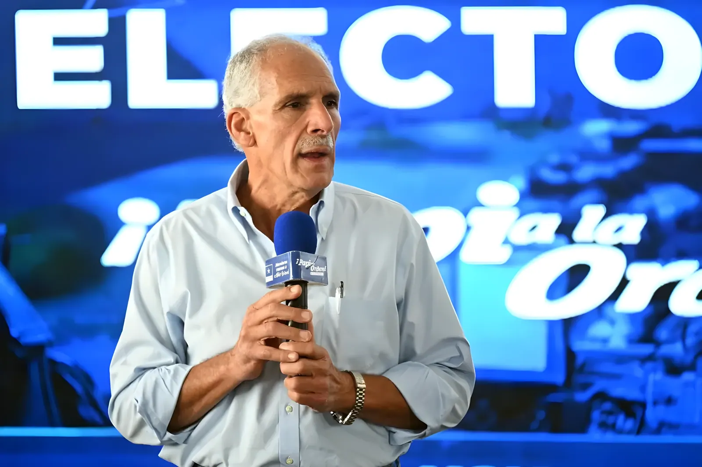

Élu en novembre 2025 face à la candidate de gauche sortante Xiomara Castro, Nasry « Tito » Asfura prend la tête du Honduras en janvier 2026. Ancien maire de Tegucigalpa et figure du Parti National, il incarne un retour de la droite conservatrice après quatre ans d'expérience progressiste. Entre promesses sécuritaires, pressions des cartels et repositionnement géopolitique, son arrivée au pouvoir dessine un Honduras en tension.
Lorsque Nasry Asfura prête serment le 27 janvier 2026, il hérite d'un Honduras profondément transformé par le mandat de Xiomara Castro (2022–2026), première femme présidente du pays. Le gouvernement Castro avait opéré une rupture symbolique majeure : retrait du Honduras des politiques d'austérité du FMI, ouverture diplomatique vers Cuba et Venezuela, et surtout proclamation de zones d'emploi et de développement spéciales (ZEDE) partiellement remises en cause.
Mais le bilan de Castro est contrasté. Si elle a affiché une ambition sociale réelle, les violences liées au narcotrafic ont persisté, l'émigration vers les États-Unis n'a pas faibli, et les accusations de corruption au sein de son propre gouvernement ont fragilisé sa majorité au Congrès. C'est dans ce contexte de désillusion partielle que le Parti National, avec Asfura, réussit à reconquérir la présidence.
Né en 1955 à Tegucigalpa dans une famille d'origine palestinienne — comme de nombreuses familles de la bourgeoisie hondurienne —, Nasry Asfura dit « Papi a la orden » a construit son capital politique sur la mairie de Tegucigalpa, qu'il a dirigée de 2014 à 2021. Populiste jovial et homme d'affaires prospère, il s'est imposé comme un candidat de proximité, multipliant les inaugurations d'infrastructures et cultivant une image de gestionnaire pragmatique.
Sa popularité n'est pas sans ombre : sous son mandat à la mairie, une enquête du Ministère Public l'accuse de détournement de fonds publics à hauteur de plusieurs millions de dollars, une affaire classée sans suite par une juridiction contestée. Cette fragilité judiciaire potentielle constitue l'une des premières vulnérabilités de sa présidence.
Élection présidentielle. Asfura obtient 52,3 % dès le premier tour face à la candidate du Libre, évitant un second tour. Le Parti National reconquiert également une majorité relative au Congrès.
Période de transition. Asfura annonce son cabinet : profil technocratique mêlant anciens ministres nationalistes et hommes d'affaires. Nomination controversée d'un ancien proche des frères Hernández au sein de la sécurité.
Investiture. Dans son discours, Asfura place la sécurité et l'emploi au cœur de son mandat. Il appelle à une « réconciliation nationale » et évoque un possible rapprochement avec Washington.
Premières tensions avec la société civile. Des organisations féministes et LGBTQ+ dénoncent des déclarations du nouveau gouvernement sur les droits reproductifs. Manifestations à Tegucigalpa et San Pedro Sula.
Plan de sécurité « Puño de Hierro » lancé dans les principales villes. Déploiement de l'armée dans les zones urbaines les plus criminogènes. Premières critiques des ONG de défense des droits humains.
Visite officielle à Washington. Rencontre avec des responsables de l'administration américaine. Signature d'un accord de coopération sécuritaire renforcée. Réouverture du dialogue avec le FMI.
La priorité absolue d'Asfura est la réduction de la violence. Le Honduras reste l'un des pays les plus meurtriers d'Amérique centrale, avec un taux d'homicides d'environ 38 pour 100 000 habitants en 2024 — en baisse par rapport aux pics des années 2010, mais toujours structurellement élevé. Les maras (MS-13, Barrio 18) et les cartels de trafiquants continuent d'exercer un contrôle territorial dans de nombreux quartiers urbains et zones rurales.
Le plan « Puño de Hierro » lancé en mars 2026 s'inspire ostensiblement du modèle salvadorien de Nayib Bukele, avec des déploiements militaires massifs et des arrestations préventives. Mais Asfura se défend de tout autoritarisme : il promet de maintenir les garanties constitutionnelles et de ne pas recourir à l'état d'exception systématique. Les premiers résultats sont encourageants dans certains quartiers de Tegucigalpa, mais contestés par des organisations de droits humains qui documentent des abus.
| Indicateur sécuritaire | 2022 | 2025 |
|---|---|---|
| Homicides / 100 000 hab. | 35,8 | ~38 |
| Zones sous contrôle mara | Élevé | Persistant |
| Migrants expulsés des USA | 52 000 | ~70 000 |
| Arrestations liées au trafic | 4 200 | 6 800 |
L'un des changements les plus immédiats concerne la politique étrangère. Castro avait rompu avec Taïwan en 2023 pour reconnaître la République populaire de Chine, obtenant en échange d'importants engagements d'investissements en infrastructures. Asfura ne remet pas en cause la reconnaissance de Pékin — un retournement serait trop coûteux diplomatiquement et financièrement — mais il opère un rééquilibrage net vers Washington.
Sa visite en avril 2026 à Washington a abouti à la signature d'un accord de coopération sécuritaire renforcée incluant une aide financière pour la lutte anti-narco et un programme de formation des forces de l'ordre honduriennes. En contrepartie, Asfura s'engage à intensifier la coopération sur la gestion migratoire, enjeu central de l'agenda américain en Amérique centrale.
« Honduras primero. Vamos a recuperar la paz en nuestras calles, con la ley y con orden. »
— Nasry Asfura, discours d'investiture, Tegucigalpa, 27 janvier 2026« On a voté pour lui parce qu'on avait peur, mais maintenant c'est l'armée dans nos rues. Ce n'est pas ce qu'on voulait. »
— Ramona, habitante du quartier de La Sosa, Tegucigalpa, mars 2026Sur le plan économique, Asfura hérite d'un pays dont les remesas (transferts des Honduriens de l'étranger, principalement des États-Unis) représentent plus de 25 % du PIB — une dépendance structurelle qui rend le pays extrêmement sensible aux politiques migratoires américaines. La coopération renforcée avec Washington est donc à double tranchant : elle améliore l'image du pays auprès des investisseurs, mais toute politique d'expulsion massive affaiblirait directement les revenus des ménages honduriens.
Le gouvernement a annoncé un plan de relance industrielle centré sur les maquiladoras (zones franches manufacturières) du corridor nord, et souhaite attirer des investissements dans le secteur agro-alimentaire et les énergies renouvelables. Des négociations sont en cours avec le FMI pour un programme d'appui budgétaire conditionné à des réformes fiscales.
En prenant la tête du Honduras, Nasry Asfura incarne le retour d'une droite conservatrice qui parie sur la sécurité et le pragmatisme économique pour répondre aux attentes d'une population épuisée par la violence et la pauvreté. Mais son chemin est semé d'embûches : la question judiciaire qui plane sur lui, la profondeur des liens entre État et crime organisé, l'équilibre délicat entre Washington et Pékin, et les exigences d'une société civile qui n'a pas renoncé aux acquis de l'ère Castro. Le Honduras reste l'un des terrains les plus révélateurs des tensions qui traversent l'Amérique centrale contemporaine — entre aspiration à la stabilité et risque d'un autoritarisme de façade.
Elegido en noviembre de 2025, Nasry «Tito» Asfura toma posesión del cargo el 27 de enero de 2026. Exalcalde de Tegucigalpa y figura histórica del Partido Nacional, encarna el retorno de la derecha conservadora tras cuatro años de gobierno progresista. Entre promesas de seguridad, presiones del narcotráfico y reposicionamiento geopolítico, su llegada al poder dibuja un Honduras en tensión.
Cuando Nasry Asfura jura el cargo el 27 de enero de 2026, hereda un Honduras profundamente marcado por el mandato de Xiomara Castro (2022–2026), primera mujer presidenta del país. Su gobierno llevó a cabo una ruptura simbólica mayor: retirada de las políticas de austeridad del FMI, apertura diplomática hacia Cuba y Venezuela, y cuestionamiento parcial de las Zonas de Empleo y Desarrollo Económico (ZEDE).
Sin embargo, el balance de Castro es ambivalente. Si bien mostró una ambición social real, la violencia ligada al narcotráfico persistió, la emigración hacia Estados Unidos no cedió, y las acusaciones de corrupción al interior de su propio gobierno debilitaron su mayoría en el Congreso. Es en este contexto de desilusión parcial que el Partido Nacional logra reconquistar la presidencia.
Nacido en 1955 en Tegucigalpa en el seno de una familia de origen palestino —como muchas familias de la burguesía hondureña—, Nasry Asfura apodado «Papi a la orden» construyó su capital político como alcalde de Tegucigalpa entre 2014 y 2021. Populista jovial y próspero hombre de negocios, se consolidó como candidato de proximidad, multiplicando inauguraciones de infraestructuras y cultivando una imagen de gestor pragmático.
Su popularidad no está exenta de sombras: durante su gestión municipal, el Ministerio Público lo investigó por desvío de fondos públicos por varios millones de dólares, causa sobreseída por una jurisdicción cuestionada. Esta fragilidad judicial potencial constituye una de las primeras vulnerabilidades de su presidencia.
Elecciones presidenciales. Asfura obtiene el 52,3 % en primera vuelta. El Partido Nacional recupera también una mayoría relativa en el Congreso.
Período de transición. Asfura anuncia su gabinete: perfil tecnocrático que mezcla exministros nacionalistas y empresarios. Nombramiento controvertido en el área de seguridad.
Investidura. Asfura coloca la seguridad y el empleo en el centro de su mandato. Llama a la «reconciliación nacional» e insinúa un acercamiento a Washington.
Primeras tensiones con la sociedad civil. Organizaciones feministas y LGBTQ+ denuncian declaraciones del nuevo gobierno sobre derechos reproductivos.
Lanzamiento del plan de seguridad «Puño de Hierro». Despliegue del ejército en las principales ciudades. Primeras críticas de ONG de derechos humanos.
Visita oficial a Washington. Firma de un acuerdo de cooperación en seguridad. Reapertura del diálogo con el FMI.
La prioridad absoluta de Asfura es la reducción de la violencia. Honduras sigue siendo uno de los países más violentos de Centroamérica, con una tasa de homicidios de aproximadamente 38 por 100 000 habitantes en 2024. Las maras (MS-13, Barrio 18) y los cárteles continúan ejerciendo control territorial en numerosos barrios urbanos y zonas rurales.
El plan «Puño de Hierro» lanzado en marzo de 2026 se inspira abiertamente en el modelo salvadoreño de Nayib Bukele, con despliegues militares masivos y detenciones preventivas. Pero Asfura rechaza el calificativo de autoritario: promete mantener las garantías constitucionales y no recurrir al estado de excepción sistematizado.
| Indicador de seguridad | 2022 | 2025 |
|---|---|---|
| Homicidios / 100 000 hab. | 35,8 | ~38 |
| Zonas bajo control mara | Elevado | Persistente |
| Migrantes expulsados de EE. UU. | 52 000 | ~70 000 |
| Detenciones por tráfico | 4 200 | 6 800 |
Uno de los cambios más inmediatos concierne la política exterior. Castro había roto con Taiwán en 2023 para reconocer a la República Popular China. Asfura no cuestiona el reconocimiento de Pekín —un giro sería demasiado costoso diplomática y financieramente—, pero opera un reequilibrio neto hacia Washington.
Su visita en abril de 2026 a la capital estadounidense desembocó en la firma de un acuerdo de cooperación en seguridad que incluye ayuda financiera para la lucha antidroga y un programa de formación de las fuerzas del orden hondureñas. A cambio, Asfura se compromete a intensificar la cooperación en gestión migratoria.
« Honduras primero. Vamos a recuperar la paz en nuestras calles, con la ley y con orden. »
— Nasry Asfura, discurso de investidura, Tegucigalpa, 27 de enero de 2026« Votamos por él porque teníamos miedo, pero ahora hay militares en nuestras calles. No era lo que queríamos. »
— Ramona, vecina del barrio La Sosa, Tegucigalpa, marzo de 2026En el plano económico, Asfura hereda un país cuyas remesas representan más del 25 % del PIB, una dependencia estructural que hace al país extremadamente sensible a las políticas migratorias estadounidenses. El gobierno anunció un plan de reactivación industrial centrado en las maquiladoras del corredor norte y la atracción de inversiones en agroindustria y energías renovables.
Al tomar la presidencia de Honduras, Nasry Asfura encarna el retorno de una derecha conservadora que apuesta por la seguridad y el pragmatismo económico para responder a las expectativas de una población agotada por la violencia y la pobreza. Pero su camino está lleno de obstáculos: la cuestión judicial pendiente, la profundidad de los vínculos entre el Estado y el crimen organizado, el delicado equilibrio entre Washington y Pekín, y las exigencias de una sociedad civil que no ha renunciado a los avances de la era Castro. Honduras sigue siendo uno de los escenarios más reveladores de las tensiones que atraviesan Centroamérica: entre aspiración a la estabilidad y riesgo de un autoritarismo de fachada.